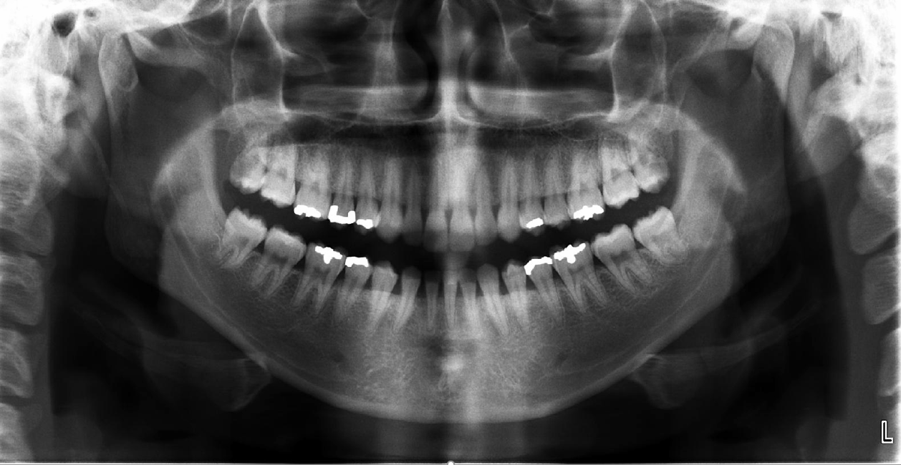
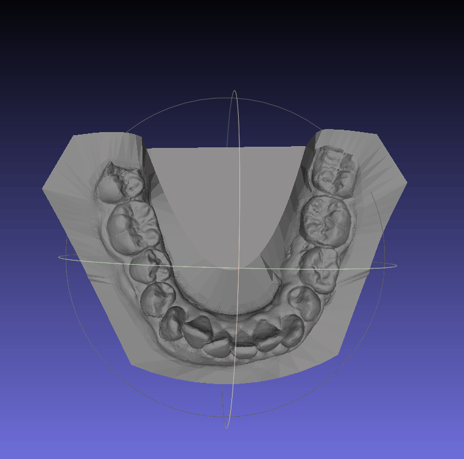
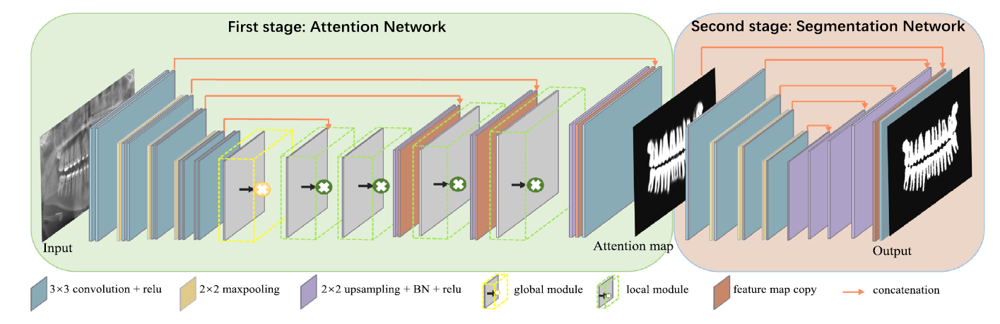

Spatial Prior-Guided Bi-Directional Cross-Attention Transformers for Tooth Instance Segmentation
IEEE Transactions on Medical Imaging, 43(11): 3936–3948, 2024.


Semantic Graph Attention with Explicit Anatomical Association Modeling for Tooth Segmentation from CBCT Images
IEEE Transactions on Medical Imaging, 41(11): 3116–3127, 2022.

TSASNet: Tooth Segmentation on Dental Panoramic X-ray Images by Two-Stage Attention Segmentation Network
Knowledge-Based Systems, 206: 106338, 2020.